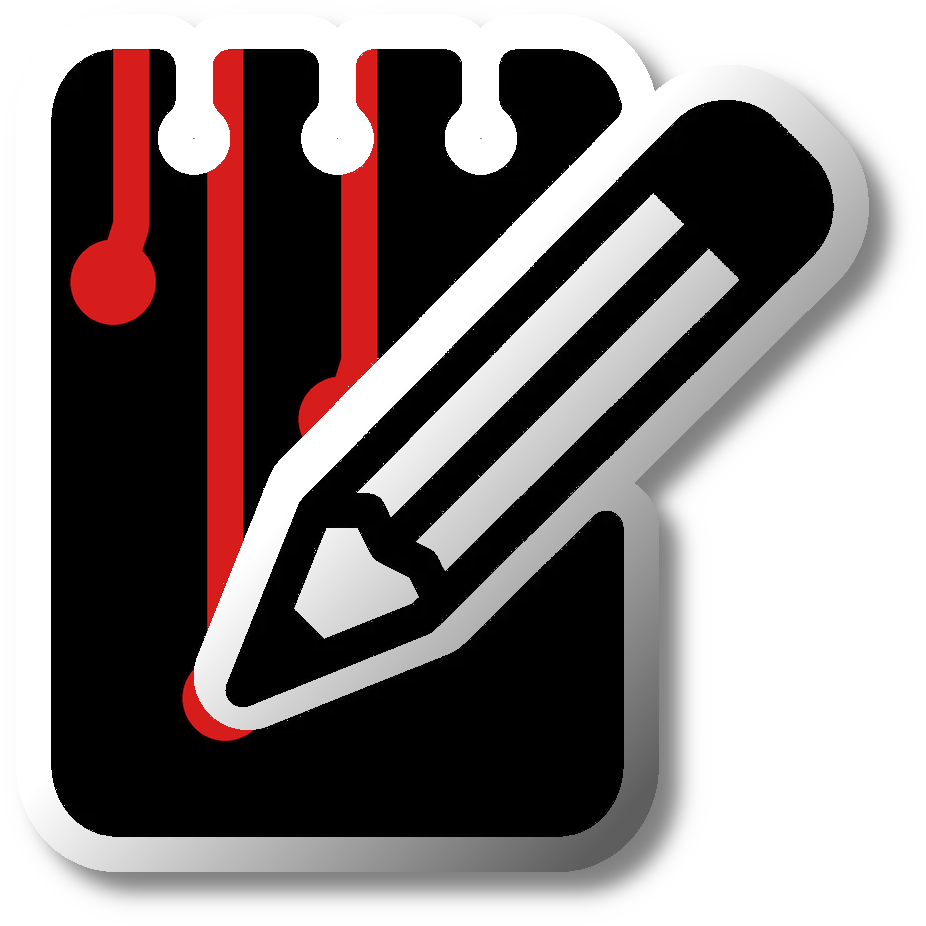

KillerNotesOne searchable, encrypted notepad instead of 80 Notepad tabs - rich text, inline images, real tables, and every note always saved, shareable as tear-off .knote files.
Fully featured
- Full-text search as you type (SQLite FTS5)
- Rich text with inline images, real tables, colors, highlights, and rules
- Named note groups - nested to any depth - and drag-and-drop custom order
- A slide-up Killculator that prints results straight into the note
- Optional whole-database AES-256 encryption (SQLCipher)
- Share single notes as .knote files or whole databases as .kndb - with optional share passwords
- Open .txt, .md, .html, .rtf and images as notes; export notes back out
Built from scratch
KillerNotes is written in C# and WPF on .NET Framework 4.8. Notes live in a local SQLite database with an FTS5 full-text index, encrypted at rest with SQLCipher when you set a password. Images, tables, and formatting come back from the database exactly as you left them. It ships as a single self-contained exe with no runtime to install and no background services, so it starts instantly and leaves nothing behind when you move on.
The Technical page has the full breakdown of the storage, search, and encryption design.
By a field tech, for field techs
KillerNotes is built by a working field tech and used on real client benches every day. The things that end up in it are the things that matter most: credentials, config snippets, license keys, and the personal client details you jot down between jobs. One password locks the whole database, so none of it sits in plain text on a machine other people can get to.
It answers to nobody but you: everything stays on your machine, and the whole thing is GPLv3 open source with the issues page open to anyone.
Read the story behind it on the About page.
Free, open source, GPLv3
No agent, no account, no subscription.
No telemetry is sent and no ads... ever.
What it does
One notepad, not 80 tabs
Every note lives in one local database and saves itself on every pause, note switch, and close. Nothing is lost to a reboot or a crash.
Instant search
Full-text search across every note as you type, on a SQLite FTS5 index. Sort by date or title, or arrange notes in your own custom order, and three sidebar densities fit more notes on screen.
Color-coded tags
Tag notes with colored labels, Outlook-style. Tags show as sidebar pills, and a click filters to that tag. Definitions travel inside shared files, and F7 manages them across every note.
Groups & subgroups
Drag notes into the order that matters, or file them into named groups per client or project - nested to any depth with subgroups. A parent's colored line runs down its children, headers collapse with a click, groups travel inside shared .kndb files, and Ctrl+Z undoes any move.
Rich text that keeps up
Paste screenshots inline, insert real tables, and format with bold, italic, colors, lists, monospace, and rules. Word wrap, line numbers, per-note spell check, and a full color picker with a desktop-wide eyedropper - all on hotkeys.
Encrypted at rest
Set a password and the whole database is encrypted with SQLCipher (AES-256): notes, images, index, everything. Change or remove it from the title-bar lock anytime.
Tear-off sharing
Right-click to share a note as a .knote file, optionally password-protected, or drag it straight out to Teams, Outlook, or a folder. Whole databases travel as .kndb.
Multiple databases
Keep separate notepads per client or job. Create, switch, and export them from one dialog, and a received .kndb opens with a double-click. Point the data folder anywhere.
Opens your files
Ctrl+O or drop files in: .txt, .log, and .md become notes, .rtf keeps its formatting, .html carries a rendered preview, and images land inline. Each file becomes its own note.
Export
Export any note as plain text, rich text (.rtf) with images intact, or a standalone theme-styled web page with images embedded.
Note & group colors
Right-click to color a note's title or a group's name in the sidebar, with a live preview as you pick - a fast cue for the notes you reach for most. Colors travel inside shared files and reset in one click.
The Killculator
A themed calculator that slides up from the sidebar (F9). Type an equation on the number keys, and Print (Ctrl+Enter) drops the result into your note at the cursor - no more copy-pasting out of calc.exe.
Markdown & HTML preview
Notes that look like markdown or HTML get a preview toggle that opens a rendered split pane, handy for README drafts and pasted docs.
Hotkeys & keyboard map
Everything has a key. F1 opens the shortcuts overlay with a full visual keyboard map; hold Ctrl or Shift to preview what each key does.
Themes & accents
Six themes (Dark, Light, Black, Blood, Greed, Cyanotic) with per-theme accents, all switchable live. The same set as every KillerTools app.
Portable or installed
Runs portable from a USB stick, or one-click installs per-user with no admin. A /silent switch handles RMM, winget, and Chocolatey rollouts, and uninstall always keeps your notes.